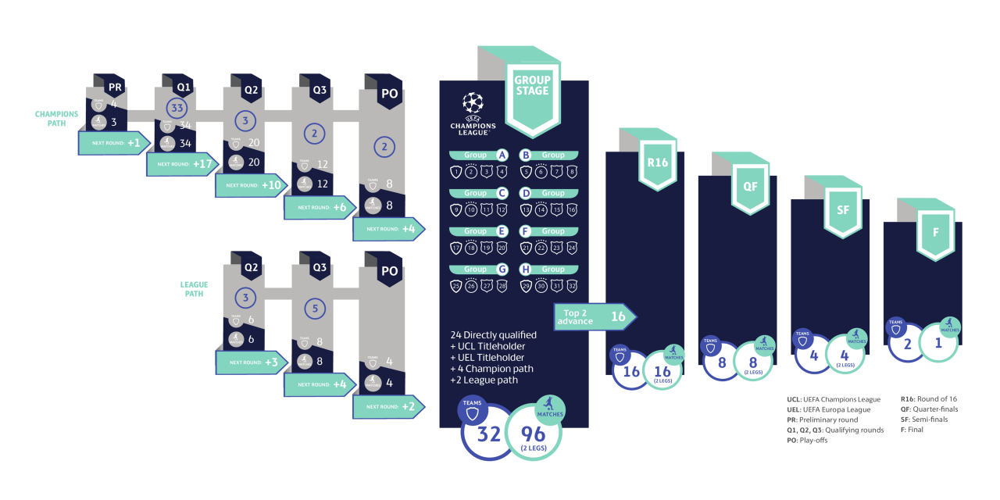

Java中的Phaser是一个同步原语，它可以让多个线程在某个时刻同步执行。它和Barrier有点类似，但是它比Barrier更加灵活。
举一个例子哈，比如足球迷特别喜欢的欧洲冠军联赛，它的赛制就分为多个阶段：
欧洲冠军联赛由欧冠资格赛、欧冠附加赛和欧冠正赛三部分组成。
欧冠资格赛，分为预赛轮（preliminary round）、第一轮资格赛（first qualifying round）、第二轮资格赛（second qualifying round）和第三轮资格赛（third qualifying round）。第三轮资格赛的优胜的10支球队进入欧冠附加赛，附加赛优胜的6支球队（冠军之路4队、联赛之路2队）将和26支自动晋级的队伍一起，参加欧冠小组赛。
欧冠正赛分为小组赛、1/8决赛、1/4决赛、半决赛和决赛。
所以欧冠联赛分成了多个阶段，每一个阶段，会有一些球队参加，等到下一阶段，淘汰了一部分球队，又会有新的球队加入，每个阶段的球队都会有变化。这种情况非常适合使用Phaser来模拟。

Phaser 和 CyclicBarrier的功能非常的相似，都是应用于多个参与者多阶段处理问题的场景，每个阶段都有障碍点，在障碍点需要等待所有的参与者到齐后才能进入下一个阶段。但是Phaser比CyclicBarrier更加灵活，CyclicBarrier的参与者数量是固定的，所以初始化CyclicBarrier的时候就需要设定参与者的数量，而Phaser的参与者数量是可以动态变化的，每个阶段完成后参与者可以选择离开，新的参与者也可以加入进来，所以上面欧冠的例子非常使用Phaser来模拟。
一旦一个同步原语的功能不是那么通用，而是面向非常细分的场景，那么它的使用范围非常有限，因为大部分场景我们都会使用WaitGroup、channel甚至CyclicBarrier去解决，但是针对参与者需要动态变化的场景，我们使用Phaser如鱼得水，比自己再封装和实现类似Phaser的功能更方便。正所谓“技多不压身”，我们多了解一些同步原语，在解决问题的时候就会更加得心应手。
Go标准库和扩展库中都没有实现，第三方库也鲜有实现，但是Java中有，我们可以参考Java中的实现，自己实现了一个，比如 github.com/smallnest/exp/sync/Phaser，当然针对Java复杂的实现做了精简，不再支持Phaser的父子关系，函数名也做了简化，将Register/Deregister改为Join/Leave等，如果你之前不了解Java的Phaser，可以看看Java Phaser。
我们看看它的方法：
|
|
我们分成几个部分来看。
初始化
NewPhaser：初始化一个Phaser，指定参与者的数量。NewPhaserWithAction：初始化一个Phaser，指定参与者的数量，以及每个阶段的障碍点到达后的回调函数。
动作
Arrive：参与者到达障碍点，但是不等待其他参与者，直接返回当前阶段。阶段的编号从0开始，每进入一个新的阶段，阶段编号会自增1。ArriveAndLeave：参与者到达障碍点，但是不等待其他参与者，直接返回当前阶段，并且离开Phaser。Wait：等待指定的阶段，如果指定的阶段已经完成，直接返回，否则等待指定的阶段完成后返回。ArriveAndWait：参与者到达障碍点，等待其他参与者到达障碍点，然后返回当前阶段。
加入和离开
Join：参与者加入Phaser，参与者的数量会自增1。Leave：参与者离开Phaser，参与者的数量会自减1。BulkJoin：批量加入参与者，参与者的数量会自增指定的数量。
终止
ForceTermination：强制终止Phaser，所有的参与者都会离开Phaser。
查询
Arrived：返回当前阶段已经到达障碍点的参与者数量。Parties：返回当前Phaser中参与者的数量。Phase：返回当前阶段的编号。IsTerminated：返回Phaser是否已经终止。
举一个例子,我在代码中加上注释，来解释代码的逻辑：
|
|